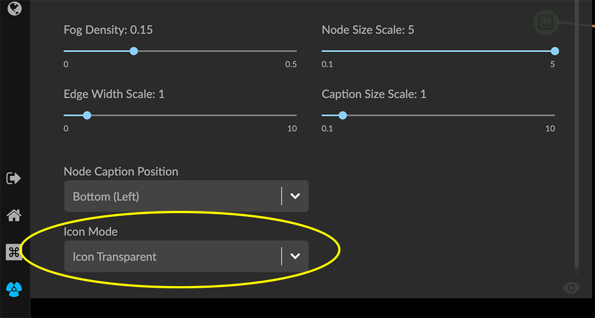
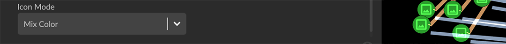

GraphXR 2.14.0 Release Notes Release Date: June 6, 2022 The GraphXR 2.14.0 release includes new features and user interface design, and new and updated extensions. In GraphXR, click About at the bottom left of the project space, then click on the current release tag to display a digest of features introduced in current and past releases. New Features 2.14.0 Icon system upgrade. In the Legend, clicking the colored dot next to any Category list item displays the Styling Setting dialog, with Color and Icon tabs to select a node color and icon. The Icon tab provides a wide choice of modern icons, a search bar, and a dropdown menu to display sets of icons of general types. Three icon display modes are available in the Project>Settings tab and Icon Mode menu.  Options are: Background Transparent Icon Transparent Mix Color  Usability Improvements. In the Legend, the list of Relationships can now be displayed beneath the list of Categories, Properties, or Tags. The contextual toolbar has been re-arranged for consistent tool positioning. The Information panel can now be re-positioned. You can use spacebar+drag to move any selection of nodes. In the Settings tab Auto Image checkbox is renamed Show Avatars. A Truncate Caption checkbox is added. A Dash Line checkbox is added to display all edges as a dashed line. Geometric layout options re-organized, and a Release button added to release geometric layouts and apply a force-directed layout to the entire graph. Collision parameter added to Force layout adjustments. A slider to adjust a Collision parameter helps avoid overlapping nodes in force-directed layouts. This is especially useful for display of 2D projections. Removed 2.14.0 None Extensions 2.14.0 Visual Query Builder. Build Cypher queries using no-code building blocks. Bug fixes. Grove (beta-release). Observable-inspired in-app javascript notebook. Continuing UI and API development For Enterprise subscriptions, limited release extensions may be available for connecting to specific external data sources, or importing data from RDBMS, document, or mixed data sources. Supported Environments 2.14.0 WINDOWS, MAC OSX, AND LINUX CLOUD, PRIVATE CLOUD, AND ON-PREMISES DATA HOSTING OCULUS RIFT, HTC VIVE, AND WINDOWS MIXED REALITY The GraphXR client runs best in Google Chrome; works in Safari. Compatibility with other browsers may vary. The GraphXR client includes beta support for Virtual Reality (VR) hardware in the Google Chrome browser via WebXR. GraphXR Cloud supports local and cloud storage. In addition, GraphXR Enterprise is available via on-premises or private cloud deployments. For more information, please contact Kineviz.